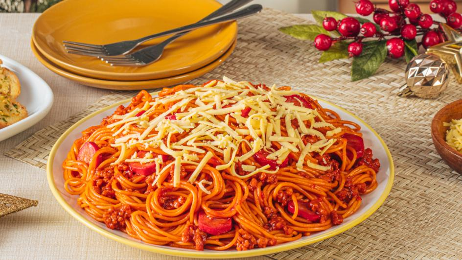

| Spaghetti  | |
|---|---|
| Ingredients: 2 tbsp Vegetable Oil 4 cloves Garlic 1 pc Onion 0.25 kg Ground Pork 200 g Tomato Sauce 0.75 cup Banana Catsup 0.5 cup Hotdog 0.5 cup Water 1 sachet MAGGI® Magic Sarap® 8g 0.25 cup Brown Sugar 0.25 kg Spaghetti 3 tbsp grated cheese |
Recipe: Step1 (10 Min) Sauté garlic, onion and ground pork in oil. Add tomato sauce, catsup and hotdog. Pour water and simmer. Season with MAGGI® Magic Sarap® and brown sugar. Set aside. Step2 (10 Min) Boil pasta according to package direction. Step3 (10 Min) Strain spaghetti and toss in the sauce. Transfer on a serving plate, top with cheese and serve. |